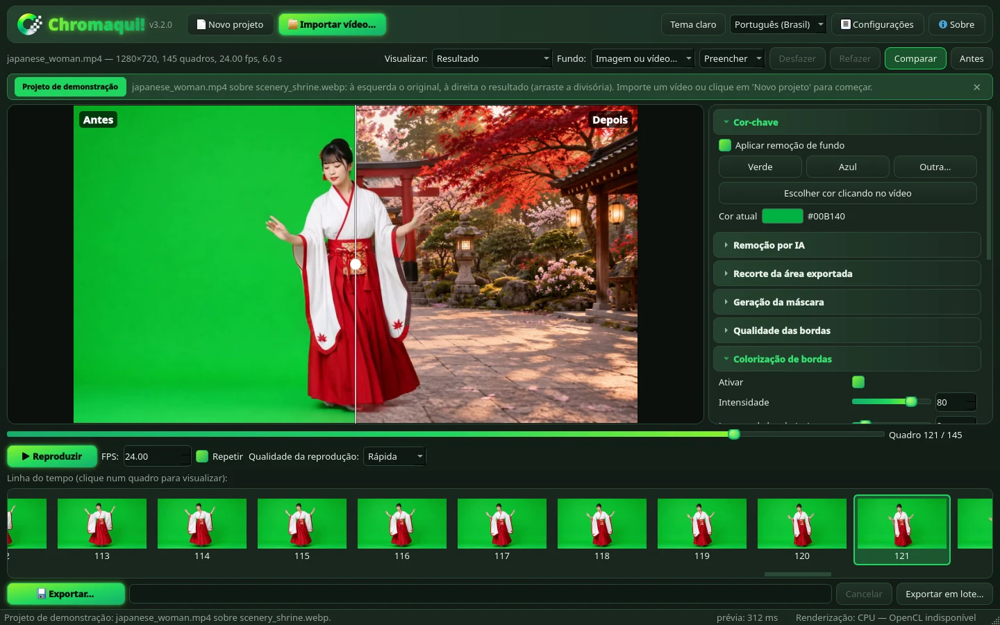

Meio a meio
À esquerda, Antes: o vídeo original com o fundo verde. À direita, Depois: o resultado já no cenário. Arraste a divisória para comparar; o botão Comparar liga e desliga a divisão.
Comece o seu projeto
Novo projeto (Ctrl+N) ou Importar vídeo… começam do zero, como sempre: nada da demonstração (ajustes, fundo, comparação, recorte) passa para o seu projeto. O ✕ fecha o aviso Projeto de demonstração.
Desligar ou ver de novo
Em Configurações → Início, desmarque Mostrar demonstração ao iniciar. Para rever, use Abrir demonstração (em Configurações ou em Sobre). Os dois arquivos ficam na pasta do programa (_internal/assets/demo) para você treinar.
